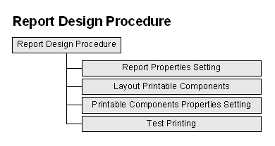
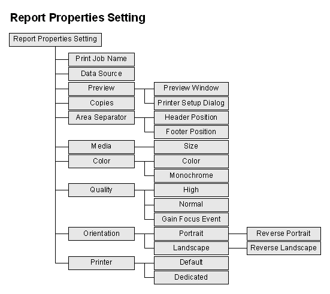
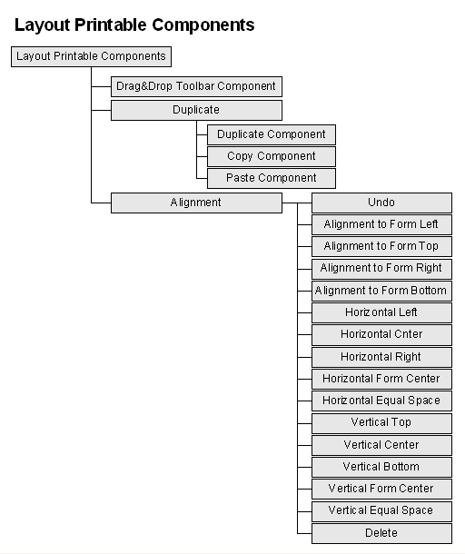
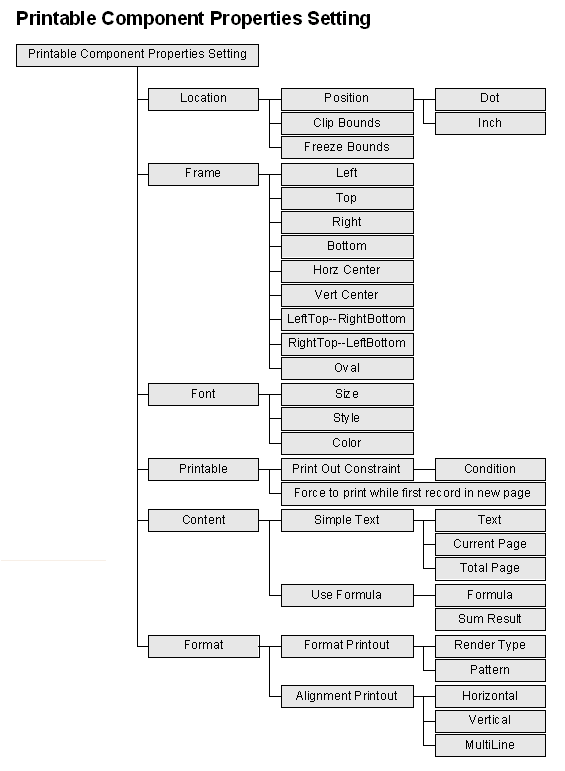
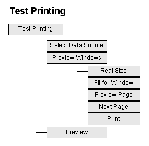

|

3.3 報表作業設計 (report design)
jLIVE Builder™
的報表作業是與視窗畫面高度整合的系統，不但擁有與視窗畫面
(form design) 相同的視覺化的拖放 (drag and drop)
設計方式，且與視窗畫面共享資料來源，所有在視窗畫面上的物件，包括資料來源、視窗元件、圖檔、統計圖、條碼等，皆可以是報表中的可列印物件
(printable object)。報表設計時，只要將可列印物件 (printable
object) 擺設在預定的區域上即可。報表系統以公釐 (mm) 或
英吋 (inch)
量測列印區域，透過網際網路，不論以任何品牌的印表機，都能得到完全一致的報表，尤其在套印時更是精確無比。可列印物件
(printable object) 的列印內容是由 jLIVE™
內含的即時運算解譯器 (formula interpreter )
所運算的結果值。而所要列印的資料，是動態的根據目前所列印的頁次，陸續地由中間層(jLIVE™
middle ware)
所提供，並非將數千頁的資料擷取後再行列印。設計師可以報表設計平台操作的進入報表設計模式，開始設計視窗畫面。
報表作業設計程序 (report design
procedure)
- 報表屬性設定 (report properties
setting)
- 佈建列印元件 (layout printable
components)
- 列印元件屬性設定 (printable
component properties setting)
- 測試列印 (test printing)

報表屬性設定 (report properties
setting)
按選【報表屬性設定】按鍵，在報表屬性設定頁上按需求設定列印紙張大小、列印方式及是否需要預灠列印
(preview)，亦可輸出至指定的印表機。

設計提示 (design tips)
- 指定印表機 (dedicated printer)
指定印表機須以運算公式
(formula) 給定印表機名稱，可以用字串格式，或使用運算公式
(formula) 的方式，動態的
(dynamic) 指定印表機名稱。當使用遠端印表機時，要填入網路印表機的路徑及印表機分享名稱。格式如下：\\印表機伺服器名稱\網路印表機名稱。
-
瀏覽器印表作業的
Java™ 安全機制 (Java™ print security policy)
由於 Java™ 在瀏覽器上執行時，會受 Java™
安全機制 (security policy)
的控管，不允許未經授權的程式碼存取使用本機資源，而印表機是本機的資源之一所以亦受其限制。在Java™
1.30 的 JRE (Java runtime environment)，使用者在瀏覽器執行印表作業時，會出現詢問使用者是否允許的對話視窗，經使用者確定後即可進行列印作業。而Java™
1.40 的 JRE
卻會不斷的出現詢問使用者是否允許的對話視窗。如果希望在使用者執行時不要出現詢問視窗，則須設定
Java™ 安全機制 (security policy) ，授權使用本機資源。在
Java security 中授權 class 來源檔的權限, 如下：
C:\Program
Files\Java\jre1.6\lib\security\java.policy 加入下列內容 ：
使用
HTTP 啟動程式 ：
grant codeBase "http://來源IP或主機/-"
{
permission java.security.AllPermission;
};
使用本機檔案 (HTML) 啟動程式 ：
grant codeBase "file:c:/HTML所在路徑/-"
{
permission java.security.AllPermission;
};
其中來源IP或主機，為置放
HTML 的 Web 主機IP或名稱。c:/HTML所在目錄，為啟動的Html路徑。
佈建列印元件 (layout printable
components)
以滑鼠點選所需元件，然後將滑鼠移至報表上，此時滑鼠游標會顯示十字符號，再將滑鼠移到所要的位置上，點滑鼠左鍵置放即可。參閱
配置元件 (layout component)、元件選取、移動、編輯
(select、move、edit components)、元件對齊
(alignment)、元件複製、拷貝、貼上
(duplicate、copy、paste)。

設計提示 (design tips)
- 元件位置 (position)
選取一個或多個元件，以滑鼠拖拉移動元件或按住鍵盤的
Ctrl 加 ←↑↓→ 鍵，微調元件群組位置。
列印元件屬性設定 (printable
component properties setting)

設計提示 (design tips)
-
Clip
Bounds
當列印資料內容超過範圍 (寬、高)，裁割掉超過的部分
。
-
Freeze
Bounds
元件大小尺寸，不列入表身(content) 單筆資料記錄總高度的計算，當元件置於表身
(content) 列印時，只列印一次，不隨資料記錄移動而逐筆列印，適用於浮水印或格式化的報表。
-
圖片列印元件
(image printable component)
選擇資料來源的資料欄位內含值，或是靜態圖片檔，作為圖檔來源。資料來源的資料欄位內含值，
jLIVE Builder™ 會以欄位型別(data field type)
自動判斷其內含值，是二進位的圖檔 (LONGVARBINARY)
資料或是圖檔路徑(VARCHAR 、 CHAR)名稱。若是二進位的圖檔
(LONGVARBINARY) 資料， jLIVE Builder™ 支援內含 JPG
格式資料。圖檔路徑(VARCHAR 、 CHAR)名稱，則支援 JPG 及 GIF。
-
備忘錄列印元件
(memo printable component)
選擇資料來源的資料欄位內含值，或使用靜態檔案，使用靜態檔案，必須放在相對路徑的..\class\doc
下。資料來源的資料欄位內含值， jLIVE Builder™
會以欄位型別(Data Field Type) 自動判斷其內含值，是檔案 (LONGVARCHAR)
資料或是檔案路徑(VARCHAR 、 CHAR)名稱。jLIVE™
支援 TXT、RTF、HTML 格式資料檔。
-
統計圖元件
(statistic printable component)
jLIVE Builder™ 為方便使用列印統計圖元件，統計圖元件必須先於視窗中定義。在報表中只要設定位置及大小即可
。
-
條碼報表元件
(barcode printable component)
是客製 (third party) 元件，屬性及功能請參照
http://www.idautomation.com/。
-
跳頁時機
(page break)
跳頁 (page break) 元件是依可列印運算公式 (formula)
的結果來判斷是否跳頁列印。元件與所擺放的位置無關，所以跳頁報表元件可擺在報表任何位置，每移動一筆資料時都會判別跳頁時機，在同一張報表可放置多個
跳頁報表元件。
測試列印 (test printing)
jLIVE
Builder™ 報表列印流程，是由設計師設定一個資料來源(data
source)，系統依序從第一筆記錄將資料印出，直到最後一筆記錄。此資料來源
(data source)
是與視窗 (form) 共享，亦即資料來源可能是經由使用者查詢
(query) 或篩選過，而每筆記錄是否列印亦會受列印元件的列印限制
(print
constraint) 屬性所控制。參閱 列印流程機制
(printing flow and mechanical)

Copyright © 2001~
2004 Probe Technology . All Rights Reserved.
Questions, comments,
and suggestions to Service@probe.com.tw
|